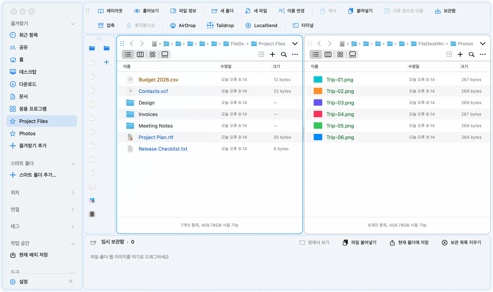
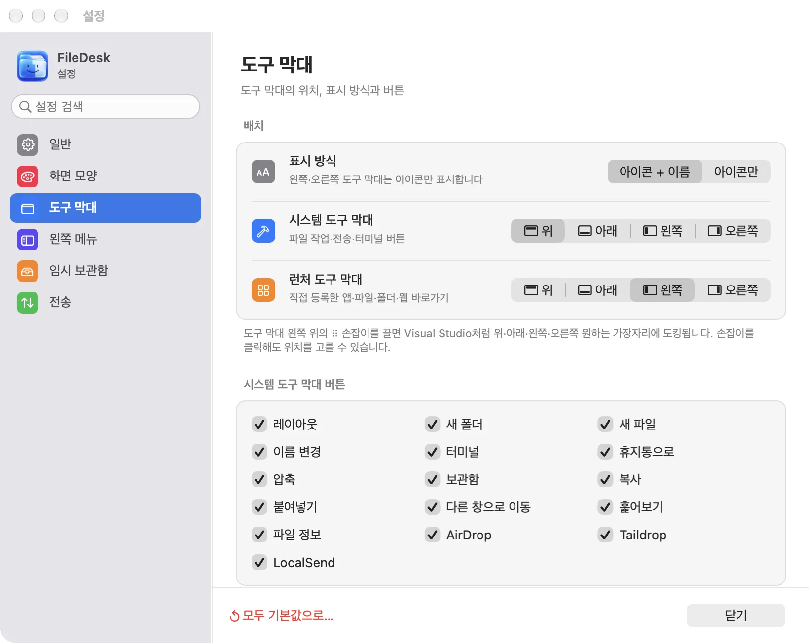

일반판 1.27 · 지금 사용 가능
FileDesk 일반판
여러 폴더를 나란히 열고, 흩어진 파일을 모으고, 두 폴더의 변경 사항을 비교하세요.
탐색과 검색
분할 창과 탭, Spotlight 검색, 스마트 폴더


여러 폴더를 함께
분할 패널과 탭으로 작업할 폴더를 나란히 살펴봅니다.
탐색과 선택의 흐름 유지
두 창을 연동해 탐색하고 탭을 고정·복원합니다. 스페이스 미리보기에서 ⌘⌫로 삭제하면 다음 파일로 이어지며, 마지막 파일은 이전 파일로 이동합니다.
필요한 파일만 빠르게 찾기
파일 내용·크기·날짜 등 조건으로 검색하고 원격 폴더도 재귀 탐색합니다. 빠른 선택에서 이름·확장자 등 조건에 맞는 파일을 선택하거나 제외합니다.
스마트 폴더
고급 검색 조건을 사이드바에 저장합니다. 다시 열면 조건과 결과를 복원하고 열어 둔 동안 Spotlight 결과를 자동으로 갱신합니다.
Spotlight 본문 검색
로컬 고급 검색에서 macOS Spotlight 색인을 사용해 큰 문서를 포함한 파일의 본문을 검색합니다.
스프링 로딩 폴더
파일을 끌어 폴더 위에 잠시 올려 두면 그 폴더가 열립니다. 깊은 위치로도 한 번에 옮길 수 있습니다.
기본 앱으로 열기와 정보
더블클릭으로 기본 앱에서 엽니다. 연결된 앱이 없으면 macOS의 앱 선택 절차를 사용합니다. Finder 정보 가져오기에서 파일 정보와 연결 앱을 확인·변경합니다.
작업 공간과 도구 막대
도구 막대 배치, 설정 검색, 키보드 단축키, 웹 바로가기

도구 막대를 원하는 가장자리에
도구 막대가 파일 작업용 시스템 도구 막대와, 직접 등록한 앱·파일·폴더·웹 바로가기를 모은 런처 도구 막대로 나뉩니다. 왼쪽 위 ⠿ 손잡이를 끌어 창의 위·아래·왼쪽·오른쪽에 붙이세요. 손잡이를 클릭해도 위치를 고를 수 있습니다.
왼쪽 메뉴 섹션 접기와 순서 바꾸기
섹션 제목을 클릭하면 접히고, 제목을 끌어 자주 쓰는 섹션을 위로 올릴 수 있습니다. 제목을 우클릭하면 모든 섹션을 한 번에 접거나 펼치고 기본 순서로 되돌립니다.
사이드바에서 설정 열기
설정은 도구 막대의 톱니바퀴 대신 왼쪽 메뉴 맨 아래에서 엽니다(⌘,). 일반·화면 모양·도구 막대·왼쪽 메뉴·임시 보관함·전송으로 나뉜 화면에서 도구 막대 위치와 섹션 순서까지 바꿀 수 있습니다.
설정 검색
설정 창 왼쪽 위의 검색창에 낱말을 입력하면 모든 페이지에서 맞는 설정을 찾습니다. 결과를 누르면 그 페이지로 이동해 찾은 항목을 잠시 강조합니다.
한눈에 정리된 일반 설정
일반 페이지를 언어와 시작, 파일 표시, 파일 작업, 다른 앱 연동으로 나눴습니다. 자동 업데이트 확인과 휴지통으로 이동 전 확인을 설정에서 바로 켜고 끌 수 있고, Chrome 첨부파일 저장 연결도 이곳에서 엽니다.
더 안전한 기본값 복원
설정 창 아래의 ‘모두 기본값으로…’는 작은 빨간 링크로 바뀌었습니다. 확인 창에서 Return 키를 누르면 취소되므로 실수로 설정을 되돌리지 않습니다.
내게 맞는 작업 환경
임시보관함을 설정에서 켜거나 끄고(기본값: 사용), 단축키를 바꿉니다. 빠른 실행, 사용자 명령, 즐겨찾기 iCloud 동기화와 macOS 기본 터미널 열기를 지원합니다.
도구막대를 직접 꾸미기
버튼을 드래그해 순서를 바꾸고 파일·폴더·앱을 도구막대에 드롭해 바로가기로 등록합니다. 우클릭으로 표시 이름을 바꾸거나 제거하며, 원본은 변경하지 않습니다.
단축키 직접 입력
단축키 설정에서 원하는 키 조합을 눌러 바로 지정합니다. Command·Control 조합과 F1~F20을 지원하고 다른 명령과 겹치면 알려 줍니다.
도구막대 웹 바로가기
자주 여는 웹 주소를 도구막대 버튼으로 만들어 기본 브라우저로 엽니다. 로컬 주소는 HTTP, 일반 주소는 HTTPS로 연결합니다.
내 색으로 만드는 화면
색상표에서 원하는 테마 색상을 고르고 라이트·다크 모드를 선택하세요.
작업 공간 예시 화면 (영어)


파일 정리와 미리보기
임시보관함, 일괄 이름 변경, 디스크 사용량


파일 작업을 한곳에
복사·이동·이름 변경과 임시보관함으로 파일을 정리합니다.
폴더도 임시 보관함에
파일을 임시 보관함에 끌어 놓으세요. 보관 항목을 선택한 뒤 스페이스 바를 누르면 훑어볼 수 있습니다. 다른 창에서 정리할 때도 같은 보관함을 사용합니다.
파일뿐 아니라 폴더도 드래그·붙여넣기로 보관하고 현재 폴더에 복사합니다. 보관 목록에서 제거해도 원본 폴더와 내부 파일은 유지됩니다.
다운로드와 임시보관함
다운로드 폴더를 ‘추가된 날짜’로 정렬하세요. 임시보관함에서 항목을 선택한 뒤 스페이스 바로 훑어보거나 ‘창에서 보기’로 원본 위치를 열 수 있습니다. 파일 이름은 색상이나 단색으로 표시할 수 있습니다.
바뀔 이름을 먼저 확인하세요.
여러 파일을 선택하고 파일 메뉴에서 ‘고급 일괄 이름 변경…’을 여세요. ‘앞에 추가’에 2026-를 입력하고 표에서 변경 전후 이름을 확인한 뒤 ‘이름 변경’을 누르세요.
파일 정리와 기본 압축
순서 있는 이름 변경 규칙과 날짜·위치 삽입, 앱 잔여 파일 검토, 압축 내부 탐색·미리보기·선택 해제를 제공합니다. 기본 ZIP·TAR.GZ 압축은 일반판 기능입니다.
색상 태그와 목록 정리
체크된 색상을 다시 누르면 이름을 바꾼 색상 태그도 해제됩니다. iCloud의 사용자 지정 회색 태그는 보존됩니다. 다운로드 목록은 첫 행부터 표시되며, 일괄 이름 변경은 큰 시작 번호도 지원합니다.
한눈에 알아보는 폴더
폴더마다 색상을 지정하고 중앙에 이미지를 넣어 용도를 구분합니다.
반복 작업을 가볍게
일괄 이름 변경, 중복 파일 검색과 텍스트 문서 비교로 정리 시간을 줄입니다.
더 가벼운 미리보기
아이콘 이미지는 표시 크기에 맞춰 저장하고, 썸네일 캐시는 최대 48MiB를 사용합니다. 메모리가 부족해지면 캐시와 숨겨진 미리보기를 해제합니다.
사진 EXIF·메타데이터
촬영일·카메라·렌즈·노출·GPS 정보를 확인하고, 위치·기기 정보를 뺀 PNG 사본을 저장합니다. 원본은 그대로 둡니다.
디스크 사용량 보기
현재 폴더나 선택한 폴더의 하위 항목 크기를 원형 차트와 표로 보여 줍니다. 파일 크기와 디스크 할당 크기를 따로 표시합니다.
폴더의 파일 크기와 디스크에 실제로 할당된 공간을 비교하세요. 자주 쓰는 조건은 스마트 폴더에 저장하고, 파일 내용은 Spotlight로 검색할 수 있습니다.
열기 전에 확인
파일 썸네일과 미리보기로 필요한 항목을 찾습니다.
연결과 전송
서버 연결, 폴더 동기화, 기기 간 전송

폴더 동기화와 비교
하위 폴더까지 비교하고 단방향·양방향으로 동기화합니다. 실행할 변경 목록을 먼저 확인하고 제외·삭제 규칙을 저장합니다. 이미지 비교와 외부 비교 앱 연결도 지원합니다.
이번 동기화에서 건너뛴 충돌은 앱을 다시 열어도 다음 비교에 표시됩니다. 수정 시각은 양쪽 저장소가 공통으로 기록하는 정밀도에 맞춰 비교합니다.
서버와 전송 관리
S3·Backblaze B2·Rackspace 연결, Dropbox 공유 링크, 원격 편집 변경 감지·업로드와 충돌 확인을 추가했습니다. 전송 대기열 순서·속도 제한·활동 기록을 관리합니다.
클라우드도 같은 창에서
Google Drive·OneDrive·pCloud·Dropbox와 서버의 파일을 선택한 창에서 탐색합니다.
Google Drive for desktop, OneDrive, pCloud, Dropbox의 공식 동기화 앱에 로그인해 두면 FileDesk가 동기화 폴더를 찾아 바로 엽니다. 별도 인증이나 사용자 수 제한이 없어 대부분의 사용자에게 권장하는 방법입니다.
Google Drive: Google 공식 앱인 Google Drive for desktop을 설치하고 로그인하면 내 드라이브와 공유 드라이브가 왼쪽 위치에 나타나며, FileDesk에서 일반 폴더처럼 탐색·복사·이동할 수 있습니다.
로그인 정보는 사용자의 컴퓨터에 암호화해 저장합니다. 클라우드 파일은 사용자의 기기와 선택한 서비스 사이에서 전송되며, FileDesk 운영자의 서버를 거치지 않습니다. 자세한 내용은 개인정보처리방침을 확인하세요.
왼쪽 연결 → 클라우드 연결에서 Google Drive 로그인을 누르면 Google Drive for desktop을 열고, 설치되어 있지 않으면 Google의 설치 안내를 엽니다. 앱에서 로그인한 뒤 다시 찾기를 누르면 FileDesk가 드라이브 폴더를 찾아 연결합니다. 로그인과 동기화는 Google 앱이 관리하므로 FileDesk에 Google 계정을 따로 입력할 필요가 없습니다.
실행 취소와 원격 파일 편집
실행 취소 전에는 해당 경로에 있는 항목이 원래 작업의 대상과 같은지 확인합니다. 원격 파일의 편집 세션은 각각 따로 추적합니다.
내 기기로 바로 전송
Tailscale로 연결된 기기를 선택해 파일을 보냅니다. Mac과 Windows 사이에서도 사용할 수 있습니다.
파일 창에서 Git 작업까지
변경 상태를 확인하고 파일 추가·커밋·푸시·풀을 실행합니다. 저장소 작업을 파일 탐색 흐름 안에서 이어갑니다.
Finder 서비스·URL 자동화
Finder 서비스 메뉴와 filedesk:// URL로 FileDesk에서 열기·디스크 사용량·폴더 검색·사진 정보를 실행합니다.
Chrome 첨부파일 저장
Chrome 첨부파일 연결은 선택 기능입니다. 파일 → Chrome 첨부파일 저장 연결…에서 Gmail·Outlook 첨부파일 저장용 확장을 설정하세요. 일반 파일 관리에는 필요하지 않습니다.
1.27 업데이트 내용

도구 막대 설정에서 긴 항목 이름을 읽기 쉽도록 버튼 목록을 두 열로 배치합니다. 도구 막대 사용자화 창에서도 이름이 길면 작은 체크 상자를 사용합니다.
새 클라우드 폴더를 연결하려면 Google Drive for desktop, OneDrive, pCloud 또는 Dropbox의 공식 앱에 로그인한 뒤 사이드바에서 클라우드 연결을 여세요. 이전에 직접 연결한 계정은 사이드바에서 계속 열 수 있습니다.